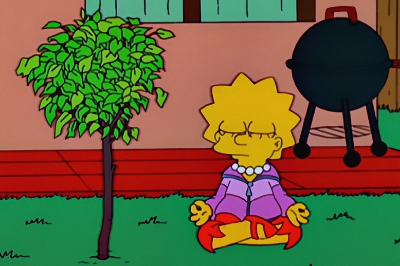

Lisa Marie Simpson, a filha do meio - totalmente diferente do resto da família -, tem 8 anos e é superdotada, intelectual, estudiosa, vegetariana e ambientalista, toca perfeitamente saxofone e adora jazz. É adepta ao budismo, em oposição ao resto da família, que segue o cristianismo.
Lisa Simpson é uma personagem notoriamente diferente do resto da família. Ela possui conhecimentos avançados de música, literatura e ciências. É inteligente e deseja aprender mais sobre o mundo. Não se conforma com a vida simples de cidade pequena. A inteligência de Lisa, que a faz ser diferente, parece ser a razão pela qual ela nunca consegue encontrar a felicidade. Nos episódios posteriores à época dourada, a série enfatiza que Lisa jamais vai poder ter amigos de verdade. Existem poucos episódios nos quais ela encontra pessoas com quem consegue simpatizar. Infelizmente, estes amigos sempre acabam desaparecendo de uma maneira ou outra.
Os Simpsons, uma sátira da vida cotidiana, parece identificar e defender uma ideia: as pessoas excepcionais não conseguem ser felizes. É como se a inteligência fosse contrária às satisfações do dia a dia. Neste caso, o que mostra é somente a representação de um preconceito social. Não existe nenhuma razão real pela qual uma pessoa instruída e inteligente não possa ser feliz. Existe uma espécie de mito que indica que a ignorância é uma bênção, que não entender ou não saber não é algo necessariamente ruim. No entanto, também não é ruim saber e entender. Poder compreender o mundo é uma virtude que deve ser protegida. É daí que surgem as ciências, as artes e toda a genialidade que persiste no tempo.
Curiosamente, depois da décima segunda temporada, a personagem de Lisa Simpson muda. Essa mudança é sutil, mas vai aumentando com o decorrer do tempo. Lisa Simpson se transforma na personagem mais castigada pelos criadores do programa. Esses castigos são, muitas vezes, completamente injustos e desnecessários para Lisa como personagem. Os outros personagens da família central costumam ser recompensados depois de pequenos castigos. Estas recompensas vão desde o crescimento pessoal, amor e carinho ou a aprovação por parte da comunidade. No entanto, vemos constantemente como a dor e o sofrimento de Lisa jamais são recompensados. Lisa Simpson se mantém como uma personagem forçosamente solitária. Com manifestações de comportamento depressivo, poucas vezes encontra consolo. Devido à sua inteligência, ao seu interesse por aprender, Lisa é ridicularizada como uma “sabichona”.